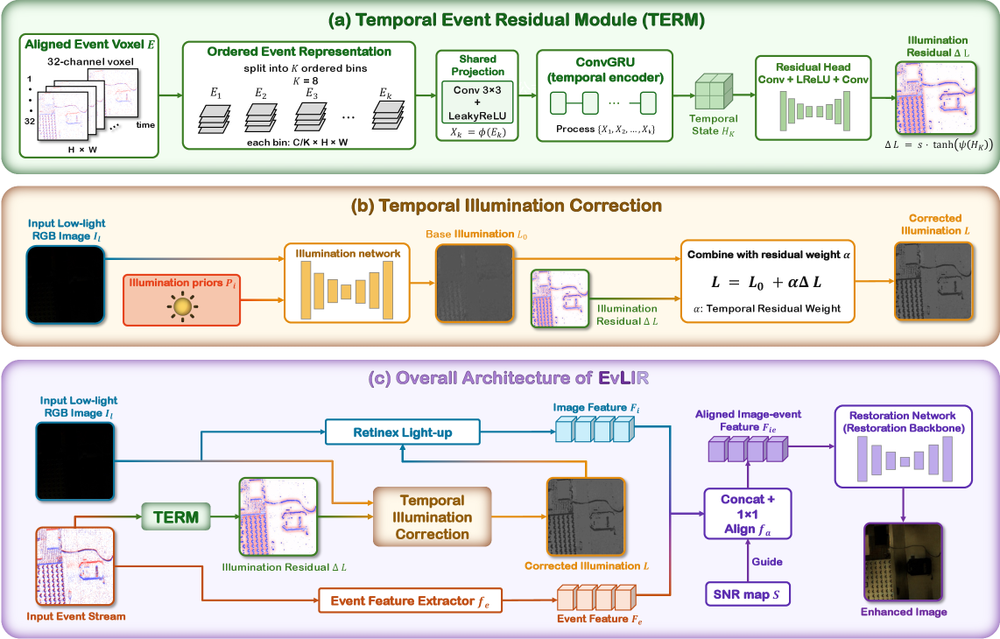

Figure 1 : Overview of Seahorse . The framework takes fixed event datasets, model presets, and benchmark configuration as inputs, runs heterogeneous STPP models under a common cont...
Figure 2: Framework of the proposed liquid latent dynamics model. The method encodes a history window into degradation and condition states, rolls the degradation state forward wit...
Figure 7 . Winkler score distribution over feeders per model. The distribution is not over all timestamps or all forecast but over the metric per feeder and model. While Weeknaive ...
Figure 2: Overview of Event-VLA. Event streams are first compressed into PREI residual maps and encoded as event tokens. The pretrained VLA builds the RGB-language-proprioceptive s...
Figure 2: Framework overview of our CMTFormer. Our model takes stacked event frames and RGB frames as inputs and extracts multi-scale features through a dual-stream feature extract...
如何把短窗口事件顺序转成空间自适应的光照/可靠性引导，而不是把事件只作为静态附加特征？
对当前主题的关键意义在于：可把 TERM 改为属性网络的事件可靠性支路，输出区域级照明/事件可信度，用于控制 RGB 与 event 特征权重，并在低照度、运动模糊和事件稀疏子集上评估 mA、F1 与校准误差。
方法与关键创新

Figure 1 : Architecture of EvLIR. Ordered event bins are processed by the Temporal Event Residual Module to predict a bounded illumination correction. The corrected illumination dr...

![Figure 2: Framework overview of our CMTFormer. Our model takes stacked event frames and RGB frames as inputs and extracts multi-scale features through a dual-stream feature extractor. A progressive fusion strategy is then applied across the network: the Shallow Alignment Module (SAM) performs coarse low-level interaction on the features extracted from both modalities, the Cross-modal Enhancement Module (CEM) conducts bidirectional semantic enhancement within the encoder, and the Learnable Deep Fusion Module (LDFM) fuses high-level representations adaptively based on the learned attention weights before the decoder. The fused features are further leveraged by the Spatial-Prior Module, which guides the decoding process. The final detection results are produced by the detection head.](../assets/figures/2fd9502947cdb06b.png)